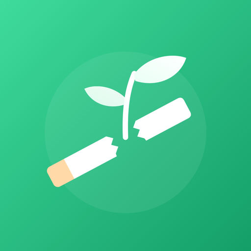

Destek
Bir Daha Yok · Sık sorulan sorular
Uygulama ücretli mi?
Hayır. Bir Daha Yok ücretsizdir ve reklamlarla desteklenir. Daha önce uygulamayı satın aldıysan herhangi bir işlem yapmana gerek yok; uygulamayı kullanmaya devam edebilirsin.
Neden reklam görüyorum?
Reklamlar uygulamanın ücretsiz kalmasını sağlıyor. Ekranın altında küçük bir banner ve ara sıra tam ekran reklam görebilirsin. Kriz Modu'na geçerken tam ekran reklam gösterilmez, tam ekran reklamlar da en fazla birkaç dakikada bir çıkar.
Kişiselleştirilmiş reklamları nasıl kapatırım?
iPhone'da Ayarlar → Gizlilik ve Güvenlik → İzleme bölümünden Bir Daha Yok için izni kapatabilirsin. Bu durumda kişiselleştirilmemiş reklamlar gösterilir.
Hesabımı nasıl silebilirim?
Uygulamada Ayarlar → Hesabımı Sil'e dokun. Hesabın ve tüm verilerin kalıcı olarak silinir; bu işlem geri alınamaz.
Bize ulaşın
Soru, öneri veya sorun bildirimi için: ugr_dundar@hotmail.com